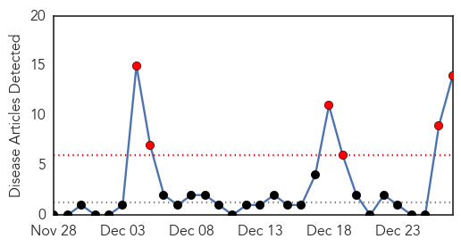
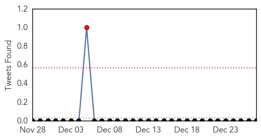
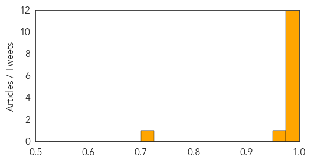
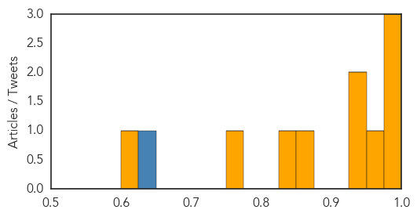

Swine Flu
30-Day Web Trend
6 alerts, 0 warnings

30-Day Twitter Trend
1 alerts, 0 warnings

Article Locations

Article Confidences
Top Articles:
- 0.999
- A Woman Dies From Swine Flu After A Few Days Of Infection
- 0.998
- Delhi hospitals on alert after first swine flu death
- 0.997
- Delhi hospitals put on alert following swine flu death
- 0.996
- Delhi hospitals put on alert following swine flu death
- 0.991
- Swine flu death: Nadda says no need to panic
- 0.991
- Swine flu death: Nadda says no need to panic
- 0.991
- Swine flu death: Nadda says no need to panic
- 0.989
- Swine flu death: Nadda says no need to panic
- 0.988
- Four fold surge in flu cases will tip the NHS over the edge, medics warn
- 0.987
- Six swine flu cases in Hyderabad
- 0.987
- Nadda says no need to panic , AniNews.in
- 0.976
- How to Protect Yourself From Swine Flu
- 0.961
- Hospitals on alert after suspected swine flu death
- 0.703
- Centre to issue guidelines asking airlines and airports to maintain hygiene : India, News
Top Tweets:
-
No tweets found for Dec 27, 2014
Influenza
30-Day Web Trend
1 alerts, 0 warnings

30-Day Twitter Trend
3 alerts, 0 warnings

Article Locations

Article Confidences
Top Articles:
- 1.000
- Flu season expected to be rough this year
- 0.984
- County and state health officials promote flu shots in Oklahoma
- 0.981
- Libya: 4 H5N1 bird flu deaths reported
- 0.964
- Flu Season in Full Swing in Rhode Island
- 0.946
- 4 die of bird flu in Libya
- 0.942
- Four die of bird flu in Libya: minister – BorneoPost Online
- 0.875
- Woman, 68, in critical condition after being diagnosed with bird flu
- 0.838
- Shizuoka hospital influenza outbreak leaves 2 dead, 101 infected ‹ Japan Today
- 0.757
- Craig health briefs for Dec. 27, 2014: Problems encountered enrolling for health insurance; help available at VNA
- 0.617
- S. Korea confirms additional case of avian influenza
Top Tweets:
- 0.641
- RT: Asia HongKong reports 11th imported H7N9 avian influenza case, Influenza pandemic alert raised birdflu China http://t…